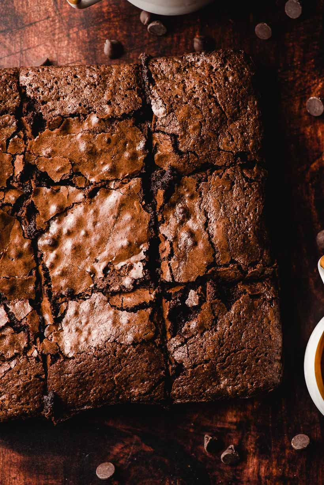

Brownies

One-pan brownies
Save time on dishes and have a delicious pan of brownies.
Ingredients
- 1 1/2 sticks (12 Tablespoons, 3/4 cup) unsalted butter
- 1 cup brown sugar
- 3/4 cup white sugar
- 3 eggs
- 1 egg yolk
- 2 teaspoons vanilla
- 1 cup sifted cocoa powder
- 1/2 teaspoon of salt
- 1/3 cup all purpose flour
- 1/2 cup chocolate chips
- Flaky sea salt, for sprinkling (optional)
Instructions
- Preheat the oven to 350 degrees. Grease an 8 x 8 inch baking dish with butter. Set aside.
- In a medium sized pot, melt the butter on the stove top over medium heat.
Remove from heat, then whisk in brown and white sugar until smooth and creamy, about 1-2 minutes.
- Add the eggs and egg yolk, one at a time, whisking well after each addition. Stir in the vanilla and salt.
- Add the cocoa powder and flour and stir until just combined. Stir in the chocolate chips.
- Add the egg and vanilla extract. Stir.
- Pour the mixture into the prepared pan and bake for 33-39 minutes (under done) or 40-45 minutes (baked through),
or until the center is just set. A toothpick inserted in the center should come back with a few moist crumbs attached.
Sprinkle with sea salt, if desired.
- Allow to cool or eat directly out of the pan because you have no self control (at least, that's what I do.)